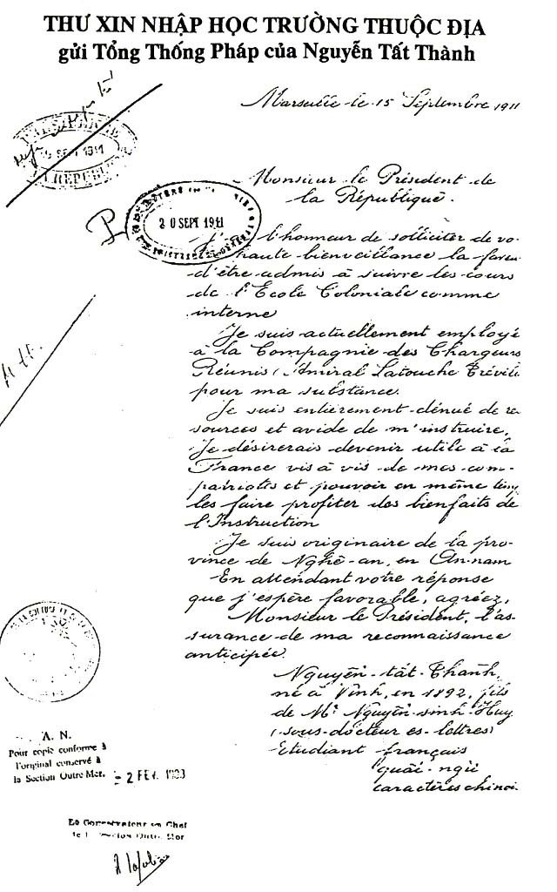

CHƯƠNG II

ặc dù hoạt động của Nguyễn Tất Thành sau khi rời Sài Gòn không được ghi lại đầy đủ, nhân chứng cho thấy Thành đã lênh đênh trên biển trong gần hai năm trời. Thế giới bên ngoài Việt Nam đã tác động tới suy nghĩ và thái độ của Thành về cuộc sống. Hơn một thập niên sau, Thành bắt đầu viết những bài báo cho các nhà xuất bản ở Pháp. Những bài viết xúc động lòng người của Thành về những điều tồi tệ trong cuộc sống ở những thành phố cảng thuộc địa ở châu Á, châu Phi và châu Mỹ la-tinh đã kể lại nỗi thống khổ trong cuộc sống cũng như sự đối xử dã man tàn bạo của những người châu Âu với dân bản xứ. Vào đầu thế kỷ XX, nhiều nơi trên thế giới đã rơi vào ách thuộc địa. Các thành phố cảng ở châu Phi và châu Á tràn ngập công nhân cảng, phu kéo xe tay và những người lao động chân tay, tất cả đều làm theo lệnh của người da trắng. Có thể trong thời gian ở nước ngoài những suy tư về sự nghiệp cách mạng sau này của Thành đã được hình thành.
Cuộc hành trình trên con tàu Đô đốc Latouche-Tréville từ Sài Gòn đi Marseilles mất vài tuần. Điều kiện ngoài khơi rất khó khăn; con tàu quá nhỏ so với một tàu chở khách xuyên đại dương, chỉ dài khoảng 100 mét và nặng chưa tới 6.000 tấn. Trong các cuốn tự thuật, là nguồn thông tin duy nhất về cuộc đời ông trong thời kỳ đó, Thành kể “Những cơn bão với những ngọn sóng “cao như núi” nhiều lần suýt nữa hất Thành khỏi tàu”.
Những ngày Thành sống trên biển thường rất dài và đơn điệu, phải dậy từ sáng sớm và chỉ hoàn thành công việc sau khi trời tối. Nhiều năm sau, Thành dùng một nhân vật khác để kể lại trong cuốn tự truyện:
“Phụ bếp trên tàu, mỗi ngày anh ta phải làm từ bốn giờ sáng, quét dọn sạch sẽ nhà bếp lớn trên tàu, tối đốt lửa trong các lò. Sau đó đi khuân than, rồi xuống hầm lấy rau, thịt cá, nước đá v.v. Công việc khá nặng nhọc vì dưới bếp rất nóng và trong hầm rất rét. Nhất là khi vừa phải vác một bao nặng vừa leo lên những bậc thang trong khi tàu tròng trành”.[1]
Tuy nhiên, Thành dường như an tâm chịu đựng và nhiệt tình làm việc. Trong một lá thư gửi cho một người quen ở Sài Gòn, Thành đã đùa: “Người anh hùng vui vẻ suốt ngày làm những gì anh ta cảm thấy thích như đánh bóng các vật dụng bằng đồng, lau chùi nhà vệ sinh, buồng tắm, dọn sạch thùng phân”. Hàng ngày làm xong mọi việc khoảng 9 giờ tối, Thành lại đọc sách hoặc viết lách đến tận nửa đêm, thỉnh thoảng giúp những người không biết chữ trên tàu viết thư cho gia đình. Kỹ sư nông học kiêm nhà báo Bùi Quang Chiêu - sau này là lãnh đạo tổ chức đối lập phong trào cộng sản của Hồ Chí Minh - kể lại, “Ông đã gặp Thành trong chuyến đi và hỏi tại sao một người thông minh như thế lại kiếm một công việc nặng nhọc như vậy”. Thành chỉ cười, “Muốn tới Pháp để tìm cách lật ngược quyết định của triều đình cách chức cha Thành”.[2]
Sau khi dừng lại ở Singapore, Colombo và Port Said, tàu Đô đốc Latouche - Tréville cập cảng Marseilles ngày 6-7-1911. Thành nhận được tiền công - khoảng mười quan tiền Pháp - số tiền chỉ đủ ăn ở vài ngày trong khách sạn rẻ tiền. Thành rời tàu cùng với một ngưòi bạn để chiêm ngưỡng phong cảnh đầu tiên về nước Pháp. Lần đầu tiên Thành nhìn thấy tàu điện “nhà di động”, (người Việt Nam lúc đó gọi), cũng là lần đầu tiên Thành được người ta gọi là “ông” khi dừng lại uống một ly cà phê trong tiệm nằm trên đường Cannebiere nổi tiếng của thành phố. Điều này làm Thành nhớ mãi, kể với bạn, “Người Pháp ở trong nước rất tử tế, lịch sự, khác hẳn bọn Pháp ở Đông Dương”. Thành đã phát hiện ra, ngay tại nước Pháp cũng có những người nghèo giống như ở vùng Đông Dương thuộc Pháp. Hồi ấy cũng như bây giờ, Marseilles vẫn là một thành phố xô bồ, đường phố đầy thuỷ thủ, ma cà bông, lái buôn và những tên trộm cắp gồm đủ các dân tộc. Trông thấy các cô gái điếm lên tàu với các thuỷ thủ, Thành hỏi bạn “Tại sao người Pháp không khai hóa văn minh cho đồng bào của họ trước khi khi đi “khai hoá” chúng ta”.[3]
Thành quay trở lại tàu trước khi tàu rời đi Le Havre; tàu tới Le Havre ngày 15-7. Vài ngày sau tàu tới Dunkirk, sau đó trở lại Marseilles và cập cảng thành phố vào giữa tháng chín. Tại đây, Thành đã viết một bức thư gửi tổng thống Cộng hoà Pháp. Sự kiện này rất lạ do vậy cần in lại toàn văn bức thư bằng Pháp ngữ:
Marseille le15 Septembre 1911
Monsieur le President de la République
J'ai l'honneur de solliciter de votre bienveillance la faveur d'être admis à suivre les cours de l ' École Coloniale comme interne.
Je suis actuellement employé à la Compagnie des Chargeurs Réunis pour ma substance à soi de l'Amiral Latouche Tréville.
Je suis entièrement dénué de ressources et avide de m' instruire. Je désirerais devenir utile à la France vis à vis de mes compatriotes et pouvoir en même temps les faire profiter des bienfaits de l' instruction.
Je suis originaire de la province de Nghê-an, en Annam.
En attendant votre réponse que j ' espère favorable, agréez, Monsieur le Président, mes plus respectueuses hommages et l ' assurance de ma reconnaissance anticipée.
Nguyễn-tất Thành,
né à Vinh, en 1892,fils de Mr Nguyễn sinh Huy, sous docteur es-lettre
Étudiant Francais, quốc ngữ, caractère chinois

Marseilles ngày 15 tháng 9 năm 1919
Thưa Ngài Tổng thống,
Tôi rất vinh dự đề nghị ngài giúp đỡ để tôi có thể được nhận vào học tại Trường Thuộc địa như một học sinh nội trú.
Tôi đang làm việc cho công ty Chargeurs Réunis (Đô đốc Latouche-Tréville) để sinh sống. Tôi hoàn toàn không có nguồn giúp đỡ và tôi rất muốn được đi học. Tôi mong muốn có thể giúp nước Pháp trong vấn đề có liên quan tới đồng bào tôi đồng thời có thể tạo thuận lợi cho đồng bào tôi thông qua việc truyền đạt lại kiến thức.
Tôi sinh ra tại tỉnh Nghệ An, Trung Kỳ. Tôi hy vọng ngài ủng hộ đề nghị của tôi. Tôi xin gửi tới ngài Tổng thống lời cảm ơn trân trọng nhất.
Nguyễn Tất Thành
Sinh tại Vinh, 1892
Con trai Nguyễn Sinh Huy (tiến sỹ văn chương)
Sinh viên Tiếng Pháp và Trung Quốc
Marseilles
Ngày 15 tháng 9 năm 1911
Trường Thuộc địa thành lập năm 1885 để đào tạo các công chức của chính phủ tại các vùng thuộc địa của Pháp, trường có “khoa bản xứ” dạy các vấn đề liên quan đến thuộc địa với khoảng hai mươi xuất học bổng dành cho các sinh viên từ vùng Đông Dương thuộc Pháp. Một số học giả băn khoăn không hiểu tại sao, một thanh niên như Nguyễn Tất Thành, người kịch liệt phản đối sự thống trị của người Pháp, lại muốn học trường thuộc địa để phục vụ nước Pháp. Họ đã phỏng đoán, có thể Thành đã có ý định đổi lòng yêu nước lấy sự nghiệp trong bộ máy chính quyền Pháp. Tuy nhiên, nhìn vào việc học tập trước đây của Thành tại trường Quốc Học Huế thì hành động của Thành không có gì đáng ngạc nhiên. Mặc dù thái độ thù nghịch của Thành đối với chính quyền thuộc địa Pháp ở Đông Dương rất rõ ràng, Thành vẫn chưa quyết định cụ thể đi con đường nào để giải phóng đất nước. Theo Thành kể lại, ông rất muốn tiếp tục học để nâng cao hiểu biết về tình hình thực tế. Trong một bức thư viết vào năm 1911, Thành đã nói với người chị, hy vọng tiếp tục được học ở Pháp và sẽ trở về Đông Dương trong vòng năm hoặc sáu năm. Hơn nữa, như trong bức thư Thành gửi cho Tổng thống Pháp đã nêu rõ mục tiêu cuối cùng là trở thành người có ích cho đất nước. Có lẽ và không phải là lần cuối, Thành đã che giấu ý định thật sự của mình để đạt được mục đích.[4]
Từ Marseilles, Thành trở lại Sài Gòn trên con tàu Đô đốc Latouche-Tréville. Thành đã rời tàu khi tàu tới nơi vào giữa tháng mười và cố liên hệ với cha. Ông Sắc vẫn chưa tìm được công việc ổn định từ khi bị triều đình cách chức và đã bị bắt trong một lần vì say rượu. Sau khi làm việc trong một thời gian dài tại đồn điền cao su ở Thủ Dầu Một, gần biên giới Campuchia, ông Sắc bắt đầu bán thuốc bắc trên khắp Nam Kỳ. Mặc dù có thể ông Sắc sống ở đâu đó trong vùng phụ cận Sài Gòn khi con trai tới, nhưng không có dấu hiệu nào chứng tỏ cả hai cha con biết nhau đang ở đâu. Ngày 31-10-1911, Thành viết thư gửi toàn quyền Pháp ở Trung Kỳ giải thích rằng Thành và cha bị ly tán vì cảnh bần cùng trong hơn hai năm và gửi kèm theo mười lăm đồng cho cha. Thành đã không nhận được thư trả lời.[5]
Từ Sài Gòn, Thành quay trở lại Marseilles, tại đó Thành được biết đơn xin học của mình tại Trường Thuộc địa đã bị từ chối. Đơn xin học đã được gửi tới giám hiệu nhà trường và họ trả lời rằng “chỉ các thí sinh được quan Toàn quyền Đông Dương giới thiệu mới được nhận vào học,”- một quy định rõ ràng đã loại Thành khỏi việc được xét đơn. Sau đó, Thành quyết định trở lại tàu cho tới khi tàu rời đi xưởng sửa chữa tại Le Havre. Hầu hết các thuỷ thủ nhận làm việc trên một con tàu khác và trở lại Đông Dương; Thành trở lại Le Havre và nhận làm vườn tại nhà một chủ tàu ở Saint Adresse, -khu nghỉ mát trên bãi biển cách thành phố vài dặm về phía tây. Sau này, Claude Monet - hoạ sĩ Pháp-, theo trường phái ấn tượng vẽ tranh sơn màu về bãi biển này. Trong lúc rảnh rỗi, Thành đọc các tạp chí trong tủ sách và học tiếng Pháp với con gái của người chủ tàu. Thỉnh thoảng Thành vào thành phố nói chuyện với những người Việt Nam. Có thể Thành đã tới Paris gặp Phan Chu Trinh. Theo một số tài liệu, cha của Thành đã đưa cho Thành thư giới thiệu gửi người bạn cùng đỗ phó bảng trước khi Thành rời Việt Nam. Sau khi được trả tự do khỏi nhà tù, ông Trinh đã tới Paris vào khoảng mùa xuân năm 1911. Nếu họ gặp nhau, hẳn họ đã trao đổi về những tin vui từ Trung Quốc. Những người cách mạng Trung Hoa dưới sự lãnh đạo của Tôn Dật Tiên đã lật đổ triều đình nhà Thanh và thành lập một nền cộng hoà kiểu phương Tây.[6]
Thành sống rất hòa hợp với gia chủ và họ đã giúp Thành trở lại làm việc cho công ty Chargeurs Reunis trên một con tàu tới châu Phi. Mặc dù một người bạn đã nói với Thành rằng châu Phi nóng hơn nhiều so với Việt Nam, Thành vẫn thích đi đó đây. “Tôi muốn được nhìn thấy thế giới” - Thành đáp lại, và vẫn quyết định đi. Vài tháng sau, Thành đã tới nhiều nước châu Phi và châu Á, trong đó có Algeria, Tunisia, Morocco, Ấn Độ, Đông Dương, Saudi Arabia, Senegal, Sudan, Dahomey, và Madagascar.
Những gì trông thấy Thành rất thích và học hỏi thêm nhiều điều khi tàu cập bến. Thành đã kể lại trong hồi ký của mình:
“Chiếc tàu nhỏ rời Ha–vơ–rơ. Đỗ lại ở Tây Ban Nha, Bồ Đào Nha, An Giê Ri, Tuy Ni Di và những cửa bể Đông châu Phi cho đến Công Gô. Đến đâu anh Ba cũng để ý xem xét. Mỗi lần tàu cập bến, thế nào anh Ba cũng kiếm cách đi thăm thành phố. Khi trở về, anh có những ảnh và những hộp diêm đầy túi. Anh thích thu thập những thứ ấy.”
Thành thường nhớ lại hình ảnh ghê rợn chế độ thuộc địa. Tại Dakar, Thành đã nhìn thấy những người châu Phi bị chết đuối khi người Pháp ra lệnh cho họ bơi ra những con tàu trong bão. Sau này Thành viết:
“Những người Pháp ở Pháp phần nhiều là tốt. Song những người Pháp thực dân rất hung ác, vô nhân đạo. Ở đâu chúng nó cũng thế. Ở ta, tôi cũng thấy chuyện như thế xảy ra ở Phan Rang. Bọn Pháp cười sặc sụa trong khi đồng bào ta chết đuối vì chúng nó. Đối với bọn thực dân, tính mạng của người thuộc địa, da vàng hay da đen cũng không đáng một xu”.[7]
Trong những năm tháng lênh đênh trên biển, Thành đã tới một số cảng vùng Tây Bán Cầu. Nhiều năm sau, Thành nói với người Cuba quen biết là anh đã tới Rio de Janeiro và Buenos Aires. Đôi khi tàu của Thành dừng lại ở các thành phố cảng dọc bờ biển phía Đông Mỹ trong đó có thành phố New York, nơi Thành đã quyết định rời tàu đi tìm việc làm. Hình như Thành ở lại Mỹ vài tháng.
Giai đoạn Hồ Chí Minh ở Hoa Kỳ vẫn là một trong những thời kỳ bí ẩn và khó hiểu nhất trong cuộc đời ông. Theo ông kể với những người quen, ông đã ở một thời gian tại New York và rất sửng sốt khi nhìn những ngôi nhà chọc trời khu Manhattan. Đi dạo với bạn bè khu phố Tầu đã gây cho ông ấn tượng là những người nhập cư châu Á ở Mỹ dường như có đủ các quyền lợi theo luật pháp, chứ không phải chỉ trên pháp lý. Ông làm lao công, công việc vặt cho một gia đình giàu có - lương bốn mươi đô-la một tháng - nhưng vẫn có thời gian tham dự các cuộc họp hoạt động xã hội của “Phong trào vì sự tiến bộ cho người da đen” ở Harlem, một tổ chức được thành lập dưới sự tài trợ của một người theo chủ nghĩa dân tộc da đen sinh ra ở Jamaica là Marcus Garvey. Nhiều năm sau, ông phát biểu với các nhà hoạt động vì hoà bình tới thăm Hà Nội - giai đoạn chiến tranh ở Việt Nam ác liệt nhất - ông đã rất xúc động bởi nỗi thống khổ của người da đen trên toàn thế giới và đã đóng góp rất nhiều cho phong trào của họ. Khi một đại biểu trong đoàn hỏi tại sao ông đã tới New York, ông trả lời, lúc đó ông nghĩ Hoa Kỳ phản đối chủ nghĩa đế quốc phương tây và có thể sẵn sàng giúp đỡ nhân dân Việt Nam lật đổ chế độ thuộc địa của Pháp. Nhưng ông kết luận, ở đó không hề có sự giúp đỡ nào.[8]
Những năm sau này, Hồ Chí Minh thường nói rằng ông cũng đã từng sống ở Boston, nơi ông làm đầu bếp trong một thời gian ngắn tại khách sạn Parker House, và đã tới một số bang ở miền nam trong một chuyến đi ngắn, tại đó ông đã chứng kiến đảng Ku Klux Klan (3 K) hành hình người da đen. Sống ở Moscow trong thập niên 1920, ông đã viết một bài báo kể lại những sự việc đó với những chi tiết sinh động. Thật không may, không một chi tiết nào về chuyến đi của ông tới Hoa Kỳ có thể chứng thực. Hầu như chỉ có một bằng chứng duy nhất không thể chối cãi khẳng định ông đã có mặt tại nước Mỹ là hai bức thư ông đã gửi đi. Bức thư thứ nhất, được ký tên Paul Tất Thành gửi toàn quyền Pháp tại Trung Kỳ ngày 15-12-1912 với dấu bưu điện của thành phố New York. Bức thư thứ hai là một tấm bưu thiếp từ Boston gửi cho Phan Chu Trinh ở Pháp; bức thư có nói rằng đang làm phụ bếp trong khách sạn Paker House.[9]
Rất có thể Thành rời Mỹ năm 1913. Thành công nhận, thời gian ở Mỹ đã ảnh hưởng rất ít đến thế giới quan của Thành khi ông nói với nữ ký giả Mỹ - Anna Louis Strong - trong khi ở Hoa Kỳ ông chẳng biết gì về chính trị. Sau một lần dừng chân ở Le Havre, Thành đã tới nước Anh để học Anh ngữ. Trong một bức thư ngắn gửi cho Phan Chu Trinh ở Pháp, Thành đã kể, trong bốn tháng rưỡi vừa qua Thành đã ở London học tiếng Anh, giao lưu với những người nước ngoài. Thành viết, “Trong vòng bốn hoặc năm tháng nữa, cháu hy vọng được gặp lại chú”. Bức thư không đề ngày, tuy nhiên bức thư đó phải được viết trước khi nổ ra Thế chiến I vào tháng 8-1914, vì trong thư Thành hỏi ông Trinh dự định nghỉ hè ở đâu.
Trong bức thư thứ hai, Thành nhận xét về xuất phát điểm nguyên nhân xảy ra Thế chiến I. Theo Thành, bất kỳ nước nào cố gắng can thiệp vào vấn đề này sẽ bị kéo vào cuộc chiến tranh và kết luận: “Cháu cho rằng trong vòng ba hoặc bốn tháng nữa, tình hình châu Á sẽ thay đổi và sẽ thay đổi rất lớn. Tình hình sẽ tồi tệ hơn, gây rối loạn đối với những người phải chiến đấu. Chúng ta chỉ có một cách là đứng sang một bên”.
Có thể Thành đã lường trước được rằng cuộc chiến sẽ dẫn tới sự sụp đổ của hệ thống thuộc địa Pháp.[10]
Trong bức thư đầu tiên gửi Phan Chu Trinh, Thành cũng đã nói rằng Thành cũng phải làm việc cơ cực để khỏi bị đói. Việc làm đầu tiên của Thành là dọn tuyết ở một trường học, sau này trong cuốn tự thuật Thành đã viết:
“Một công việc rất mệt nhọc. Mình mẩy tôi đẫm mồ hôi mà tay chân thì rét cóng. Và cuốc được đống tuyết cũng rất khó khăn vì tuyết trơn. Sau tám giờ làm công việc này, tôi mệt lử và đói bụng. Tôi đành phải bỏ việc”.
Thành nhanh chóng từ bỏ công việc này để làm một người đun lò hơi. Tuy nhiên, công việc này thậm chí còn tồi tệ hơn:
“Từ năm giờ sáng, một người nữa với tôi chui xuống hầm để nhóm lửa. Suốt ngày chúng tôi đổ than thay than trong lò. Ở đây thật đáng sợ. Luôn luôn ở trong cảnh tranh tối tranh sáng. Tôi không biết người ta làm cái gì ở tầng trên, vì không bao giờ tôi lên đấy. Người bạn tôi là một người âm thầm, có lẽ anh ta câm. Suốt hai ngày làm việc, anh ta không hề nói một tiếng. Anh vừa làm việc vừa hút thuốc. Khi nào anh ta cần tôi làm việc thì anh ta ra hiệu. Nhưng không nói một tiếng. Trong hầm hết sức nóng, ngoài trời hết sức rét, và không có đủ quần áo, tôi luôn bị cảm”.
Cuối cùng thì Thành đã tìm được việc làm trong nhà bếp của khách sạn Drayton Court ở trung tâm London. Sau đó Thành chuyển sang khách sạn Carlton và làm việc cho đầu bếp nổi tiếng Auguste Escoffier. Nếu như trong cuốn tự thuật của Hồ Chí Minh là chính xác thì Thành thật sự đã là một đầu bếp:
“Mỗi ngày có một người dọn dẹp đồ đạc. Những người phục vụ, sau khi dọn chỗ khách ăn, phải dọn bát đĩa bỏ tất cả chén bát và thức ăn lẫn lộn vào trong một cái thang điện đưa xuống bếp. Lúc bấy giờ người dọn dẹp phải để đồ đạc riêng một bên, bát đĩa để riêng một bên để người ta đem đi rửa. Khi đến lượt anh Ba, anh làm rất cẩn thận. Đáng lẽ vứt thức ăn thừa vào một cái thùng, đôi khi còn cả phần tư con gà, những miếng bít-tết to tướng v.v. thì anh giữ gìn sạch sẽ và đưa lại cho nhà bếp. Chú ý đến việc này, ông già Ét-cốp-phi-e hỏi anh: “Tại sao anh không quẳng thức ăn thừa vào thùng, như những người kia?”
“Không nên vứt đi. Ông có thể cho người nghèo những thứ ấy”.
“Ông bạn trẻ của tôi ơi, anh nghe tôi”. Ông Escoffier vừa nói vừa cười và có vẻ bằng lòng. “Tạm thời anh hãy gác ý nghĩ cách mạng của anh lại một bên, và tôi sẽ dạy cho anh cách làm bếp. Làm ngon và anh sẽ được nhiều tiền. Anh bằng lòng chứ?”
Và ông Escoffier không để cho anh Ba phải rửa bát nữa mà đưa anh vào chỗ làm bánh, với một số lương cao hơn.
Thật là một việc lớn xảy ra trong nhà bếp, vì chính là lần đầu tiên mà ông “vua bếp” làm như thế.[11]
Trong lúc rảnh rỗi Thành đã dùng số tiền ít ỏi của mình để học tiếng Anh với một thầy giáo người Ý, như Thành kể lại, thường ngồi “trong Hyde Park với quyển sách và một cái bút chì trên tay”, Thành cũng đã trở thành người hoạt động trong các tổ chức chính trị, rất nhiều tài liệu cho thấy Thành đã tham gia các hoạt động công đoàn và trở thành thành viên của Hiệp Hội Công Nhân Hải Ngoại, một tổ chức bí mật bao gồm chủ yếu những người lao động Trung Quốc ở nước ngoài mong muốn cải thiện điều kiện trong các nhà máy ở Anh. Thành đã tự tuyên bố là đã tham gia những cuộc biểu tình trên đường phố ủng hộ nền độc lập của Ireland cũng như những sự nghiệp khác của phe phái cánh tả. Có thể trong thời gian này, lần đầu tiên Thành được biết đến các tác phẩm của Karl Marx, nhà cách mạng người Đức.[12]
Cao hơn sự nghiệp trên, Thành còn canh cánh nỗi thống khổ của đất nước. Trong bài thơ ngắn đề trên tấm bưu thiếp gửi cho ông Trinh, Thành viết:
“Đứng làm trai sinh trong trời đất
Phải làm sao cho rõ mặt non sông.
Kìa kìa mấy bực anh hùng…” [13]
Nhưng Thành đâu hay, những bức thư của ông gửi cho ông Trinh đã rơi vào tay nhà cầm quyền Pháp. Cuối mùa hè năm 1941, ông Trinh và luật sư Phan Văn Trường - người đồng sự thân tín của ông - đã bị chính quyền pháp bắt giữ do bị tình nghi đã tiếp xúc với các điệp viên Đức. Tuy sau đó họ được trả tự do vì thiếu chứng cớ, cảnh sát Pháp đã lục lọi căn phòng của họ ở Paris và phát hiện ra các bức thư của một người Việt Nam tên là Nguyễn Tất Thành ngụ tại số 8 Stephen Street, gần Tottenham Court Road, London. Trong khi điều tra cảnh sát còn phát hiện thấy trong một bức thư gửi cho ông Trinh (hiện không còn nữa), Tất Thành đã phàn nàn về tình hình ở Đông Dương và hứa rằng trong tương lai sẽ tìm cách tiếp tục công việc của Trinh. Theo yêu cầu của Đại sứ quán Pháp tại London, cảnh sát Anh tiếp tục tìm kiếm nhưng không tìm được ai có tên như vậy ở địa chỉ trên. Họ đã tìm thấy hai anh em, tên là Tất Thành và Thanh, tại một địa chỉ khác. Những người này lại là sinh viên cơ khí và vừa rời đi học ở Bedford và đương nhiên họ không tham gia các hoạt động chính trị”.[14]
Những năm tháng trong thời chiến ở Vương Quốc Anh là thời kỳ ít có tư liệu nhất về cuộc đời của Thành. Những tư liệu về các hoạt động của Thành chủ yếu dựa trên những cuốn tự thuật của Thành những năm sau này. Một số nhà sử học không tin rằng Thành đã hư cấu ra chuyện này nhằm tăng lòng tin của mọi người vào một nhà cách mạng có nguồn gốc từ giai cấp lao động. Điều này rất có thể không đúng vì Thành thường không mấy khi che giấu về bản thân gia đình mình, là con của một nhà nho. Mặc dù thực tế cho thấy không thể chứng kiến được những giai thoại trong thời kỳ này, có những bằng chứng rõ ràng cho thấy Thành đã sống tại London mặc dù thực chất những hoạt động của Thành tại đó như thế nào thì vẫn còn là điều bí ẩn.[15]
Việc xác định ngày Thành quay lại Pháp cũng là một số vấn đề gây tranh cãi. Chính quyền Pháp không hề biết việc Thành có mặt ở Pháp cho tới tận mùa hè năm 1919 khi Thành tham gia một sự kiện đã làm cho Thành trở thành một người nổi tiếng nhất trên đất Pháp. Trong tự thuật của mình, Hồ Chí Minh viết, ông đã trở lại Pháp trong lúc chiến tranh. Một số người quen của ông ở Paris cho rằng Thành đã quay trở lại Pháp vào năm 1917 hoặc 1918 và một mật vụ cảnh sát theo dõi Thành vào năm 1919 lại báo cáo rằng Thành đã “đến Pháp từ lâu”. Hầu hết các tài liệu lại cho rằng thời điểm đó là vào tháng 12 năm 1917.[16]
Động cơ quay trở lại Pháp của Thành không rõ, nhưng xét trên khía cạnh mục tiêu dân tộc ông đã đề ra là rất lô-gic. Trong thời gian chiến tranh, hàng ngàn người Việt Nam buộc phải làm việc trong các công xưởng của Pháp để thay thế cho các công nhân Pháp tham gia quân đội. Từ khoảng dưới 100 người năm 1911 con số người Việt sống tại Pháp đã tăng rất nhanh trong thời chiến. Đối với một người yêu nước quyết tâm giải phóng đất nước mình thì Pháp là nơi thích hợp để hoạt động và tuyển mộ những người cùng chí hướng. Thành coi Phan Chu Trinh và Phan Văn Trường - đồng sự của ông Trinh - là địa chỉ liên lạc để qua đó thâm nhập vào thế giới của những người nhập cư hoạt động chính trị Việt Nam ở Paris. Do nổi tiếng khi viết thư cho Paul Beau năm 1906, Trinh được công nhận là người lãnh đạo cộng đồng người nhập cư tại Pháp. Sau khi bị bắt do bị nghi ngờ mưu phản khi cuộc chiến bắt đầu, Trinh đã rất thận trọng mặc dù đã có lời đồn đại cho rằng Trinh vẫn hoạt động tích cực trong phong trào Việt Nam độc lập.
Sau khi đến Pháp, Thành lập tức tham gia vận động công nhân Việt Nam. Sự mất ổn định trong xã hội xảy ra do Thế chiến I tàn khốc kéo dài. Năm 1917, binh biến đã xảy ra trong quân đội Pháp. Các phần tử cấp tiến bắt đầu các chiến dịch chống chiến tranh và tổ chức các công đoàn trong toàn quốc. Công nhân các nhà máy, xưởng đóng tàu tại các nước thuộc địa do lương thấp và điều kiện sống tồi tệ đã hưởng ứng sự vận động đó. Một chiến sĩ trẻ Việt Nam đầy nhiệt huyết chống thực dân đã đóng một vai trò rất hữu ích trong các hoạt động này.[17]
Thành bắt đầu tham gia các hoạt động đó như thế nào vẫn còn chưa rõ. Có thể Thành đã trở lại Paris với tư cách là đại biểu Hiệp Hội Công Nhân Hải Ngoại để thiết lập liên lạc với các nhóm công nhân tại Pháp. Trong trường hợp này, có thể Thành đi đi về về giữa hai nước vài lần. Hoặc có thể đơn giản hơn là Thành đã thiết lập được mối quan hệ độc lập với một số nhân vật lãnh đạo cánh tả ở Paris, những người đã tận dụng lòng nhiệt tình của Thành để hỗ trợ các hoạt động của họ.
Boris Souvarine - một sử gia nổi tiếng sau này - hồi đó là một nhà hoạt động xã hội cấp tiến ở Paris, kể lại, “ông đã gặp Thành lần đầu ngay sau khi Thành tới London và cho rằng đó là vào năm 1917”. Thành đã tìm được một chỗ tạm trú trong một nhà trọ tồi tàn trong một ngõ cụt ở khu Montmartre và bắt đầu tham dự các cuộc họp của một chi bộ địa phương của Đảng Xã hội Pháp. Chính tại đây, Thành đã gặp Boris Souvarine là người đã giới thiệu Thành với Léo Poldes, sáng lập và phát ngôn viên của Câu lạc bộ Faubourg. Thành tham dự các cuộc họp hàng tuần của câu lạc bộ bàn về nhiều vấn đề khác nhau, từ các vấn đề chính trị cấp tiến cho tới tâm lý học và những điều huyền bí. Các cuộc họp này diễn ra tại nhiều phòng họp khác nhau ở Paris. Thành hay xấu hổ, dụt dè, (Souvarine kể lại anh là “một người đàn ông trẻ rụt rè, khiêm tốn, rất nhã nhặn, ham học hỏi,”) đến nỗi những người tham dự cuộc họp gán cho Thành biệt danh “Người câm của Montmartre”.nh Pháp và những khu nhà đang xây cho công nhân Việt nam
Chú thích:
[1] Trần Dân Tiên, “Những mẩu chuyện về đời hoạt động của Hồ Chủ tịch”, trang 6. Theo cuốn này, Hồ nói, tầu thuỷ chở 700 đến 800 hành khách và thuỷ thủ đoàn, có thể chưa đúng với một chiếc tàu thuỷ nhỏ như thế. Sự thật, tàu chỉ có 40 khách hạng nhất và 72 sĩ quan và thuỷ thủ đoàn
[2] Báo cáo của Paul Arnoux ngày 21-9-1922, SPCE, hộp 365, CAOM. Xem thêm “Hồ Chí Minh: Từ Đông Dương tới Việt Nam” của Daniel Hemery trang 37 (NXB Gallimard, Paris, 1990)
[3] Trần Dân Tiên, “Những mẩu chuyện về đời hoạt động của Hồ Chủ tịch”, trang 8
[4] Xem Daniel Hemery, “Hồ Chí Minh: Từ Đông Dương tới Việt Nam”, trang 40 (NXB Gallimard, Paris, 1990) về bản sao bức thư này gửi tổng thống Pháp. Có lẽ ông cũng gửi một thư y hệt tới bộ trưởng Bộ thuộc địa ở Paris. Xem Nguyễn Thế Anh và Vũ Ngự Chiêu, “Từ mộng làm quan đến đường cách mệnh, Hồ Chí Minh và Trường Thuộc địa” Đường Mới, số 1 (tháng 6-1983), trang 14. Bản sao bức thư này cũng có trong Bảo tàng Hồ Chí Minh ở Hà Nội. Xem thêm Daniel Hemery, “Quan lại trong các thời kỳ lịch sử”, trong tập bài của Georges Boudarel, ed., “Quan lại ở Việt Nam” (NXB L'Harmattan, 1983, Paris, trang 26-30), và Thu Trang Gaspard “Hồ Chí Minh ở Paris” (NXB L’Harmattan, Paris, 1992), trang 55-56. Có thể Thành hy vọng nếu nhập học sẽ giúp cha mình được phục hồi chức vụ trong triều đình. Không phải ngẫu nhiên tên cha cậu lại được nhắc đến trong thư. Thư của Thành gửi chị gái nằm trong Sở Cảnh sát Đông Dương, Giải mật 711, ngày 7-5-1920, trong hồ sơ “1920”, SPCE, hộp 364, CAOM
[5] Ngay sau khi rời Sài gòn, Thành gửi thư lấy địa chỉ hồi âm là tàu Đô đốc Latouche-Tréville, Colombo. Bức thư này trong Giải mật, 28-4-1920, SPCE, hộp 364, CAOM. Xem thêm “Những mẩu chuyện về thời niên thiếu của Bác Hồ”, trang 97. Về Nguyễn Sinh Sắc, xem “Père de Ho Chi Minh”, không ghi ngày tháng, trong hồ sơ “Hồ Chí Minh năm 1949”, SPCE, hộp 370, CAOM. Theo một nguồn tin gần đây, Sắc bí mật liên hệ với những nhân vật chủ chốt trong phong trào yêu nước ở Nam Kỳ, một phần vì mong muốn biết tin con trai. Xem “Từ Làng Sen đến Nhà Rồng”, của Trịnh Quang Phú trang 98-99
[6] Sau này, Hồ Chí Minh kể cho một người Pháp mà ông quen khi lần đầu tiên đặt chân tới Paris lúc 20 tuổi. Xem Thu Trang, “Nguyễn Ái Quốc ở Paris (1917-1925)” trang 20 (NXB Thông tin Lý luận, Hà Nội, 1989). Về Đơn xin học Trường Thuộc địa, dưới sự thẩm vấn của một quan chức Pháp nhiều năm sau này, Nguyễn Tất Đạt (anh cả của Thành) nói, em trai ông đã viết thư cho ông nói rằng đơn xin học Trường Thuộc địa đã được nhà cầm quyền ở Đông Dương xem xét. Bởi thế, thay mặt Thành, Đạt viết một bức thư gửi Toàn quyền Albert Sarraut, nhưng không có kết quả. Bản thân Đạt cũng bị nghi ngờ có dính dáng đến phong trào nổi dậy; xem Giải mật, 28-4-1920, SPCE, hộp 364, CAOM. Về vấn đề lá thư bị Bộ thuộc địa khước từ, xem thêm “Từ mộng làm quan đến đường cách mệnh” của Nguyễn Thế Anh và Vũ Ngự Chiêu, trang 15. Về thời gian Thành ở Le Havre, xem Nguyễn Thanh, “Chủ tịch Hồ Chí Minh ở Pháp” (NXB Thông tin Lý luận, 1988), trang 23, và Hồng Hà, “Thời niên thiếu của Bác Hồ”, trang 28. Bản thân ông cũng thuật lại những ngày sống ở Le Havre trong cuốn Trần Dân Tiên, “Những mẩu chuyện về đời hoạt động của Hồ Chủ tịch”, trang 7-8. Xem thêm Trần Ngọc Danh, “Tiểu sử Hồ Chủ tịch” (NXB Liên Việt, 1949), SPCE, hộp 370, CAOM. Theo Trần Ngọc Danh - Uỷ viên Trung ương Đảng cộng sản Đông Dương, quen biết Thành từ thời ở Pháp - Thành sống ở Sainte-Adresse chừng sáu tháng. Vài nguồn khác nói Thành rời tầu thuỷ ở Le Havre sau khi tàu cập bến đầu tiên tại cảng Marseilles năm 1911. Điều này xem ra không đúng, rõ ràng thời điểm đó Thành vẫn còn trên tầu thuỷ và trở lại Sài gòn. Có thể Thành lưu trú ở Le Havre khi tàu cập bến ở Pháp lần thứ hai vào năm sau. Xem thêm “Hồ Chí Minh biên niên tiểu sử”, Tập I, trang 52
[7] Trần Dân Tiên, “Những mẩu chuyện về đời hoạt động của Hồ Chủ tịch”, trang 8-9; “Tiểu sử Hồ Chí Minh” (NXB Ba Nguyên Tư Ốc, Thượng Hải, 1949). Theo cả hai tài liệu, tầu chở rượu vang từ Algeria và Bordeaux đến các nước thuộc địa của Pháp. Rất nhiều thuỷ thủ cậy nắp thùng rượu vang uống vụng tùy thích. Thành hầu như không làm theo và cũng chẳng khuyên đồng nghiệp (chắc biết chẳng được) nên kệ họ
[8] Thông tin trong đoạn này từ nhiều nguồn khác nhau, kể cả Charles Fenn “Giới thiệu tiểu sử Hồ Chí Minh” (NXB Scribner, New York, 1973); Trần Thanh, ed., “Biên niên những mối quan hệ của Chủ tịch Hồ Chí Minh với Mỹ” (Hà Nội, 1994, bản sao); một bài báo của David Dellinger (không rõ tiêu đề) đăng trên Liberation (tháng 10-1969); một đoạn trích “Bức thư từ Trung Quốc” của Anna Louise Strong (đăng trên báo Nhân Dân ngày 18-5-1965); và cuộc phỏng vấn giữa Robert Williams với Archimedes Patti L. Archimedes Patti, nằm trong lưu trữ của Archimedes Patti tại Đại học Trung tâm Florida ở Orlando. Robert Williams là thành viên phái đoàn hoà bình thăm Hà Nội từ tháng 11 tới tháng 12-1964. Williams nói đến Hồ có nhắc “người Mỹ da đen còn nhiều vấn đề nghiêm trọng trong việc bình đẳng sắc tộc”. Theo Hồ, người Mỹ da đen ở Mỹ ngày càng lệ thuộc vật chất và né tránh hy sinh cá nhân
[9] Bức thư của Thành gửi về An Nam ngày 15-12-1912, trong đó có yêu cầu Khâm sứ Pháp tạo cho Nguyễn Sinh Sắc có công việc làm để đủ sống, hoặc chí ít cho địa chỉ của Sắc để con trai ông có thể giúp đỡ ông về vật chất. Bức thư có trong SPCE, hộp 367, CAOM. Henry Prunier, người từng làm việc ở Cơ quan công tác chiến lược Hoa Kỳ (OSS) ở Đông Dương vào cuối Thế chiến II, nói rằng Hồ Chí Minh kể cho ông tóm tắt ngày sống ở Boston. Xem Raymond P. Girard, “Người huấn luyện du kích cho Hồ Chí Minh”, Worcester (Mass) Gazette (ngày 14-5-1968). Những tìm hiểu gần đây cho biết viên quản lý khách sạn Omni Parker House không thấy hồ sơ Hồ từng làm việc ở đây. Cũng như Cơ quan nhập cư và quốc tịch Hoa Kỳ không ghi chép việc Hồ Chí Minh đã vào Mỹ. Tôi cám ơn ông A. Thomas Grunfeld, người nghiên cứu vấn đề này kết hợp với dự án Quỹ Ford về “Hồ Chí Minh ở Hoa Kỳ” năm 1993, đã cung cấp cho tôi thông tin này. Xem Grunfeld, “Đường mòn Hồ Chí Minh”, báo cáo không tự đề, ngày 1-5-1994
[10] Về lá thư bằng tiếng Pháp, xem Gaspard, “Hồ Chí Minh ở Paris”, trang 57-60. Xem thêm Alain Ruscio, ed., “Những bài viết của Hồ Chí Minh, 1914-1969”, trang 21. Bản tiếng Việt cả hai thư này, xem Toàn Tập, tập I, trang 477-78. Một thông tin khác cho thấy Thành rời Mỹ năm 1913 là bức thư của Thành gửi Khâm sứ Pháp từ New York tháng 12-1912 với địa chỉ số 1 phố Amiral Courbet ở Le Havre, cho thấy việc ông sắp trở lại Pháp. Trong những cuộc thẩm vấn nhiều năm sau này, bà Thanh - chị ruột ông - kể rằng năm 1915 bà nhận được một bức thư của một viên chức toà án Việt Nam kể rằng con trai ông cùng Thành đã đến London. Bà không nhớ tên của viên chức này, hoặc địa chỉ của người em trai của bà ở London: Cảnh sát Đông Dương, Giải mật 711, ngày 7-5-1920, SPCE, hộp 364, CAOM
[11] Trần Dân Tiên, “Những mẩu chuyện về đời hoạt động của Hồ Chủ tịch”, trang 10-12. Escoffier không đề cập tới sự cố trong hồi ký của ông. Hồ Chí Minh có thể bị ốm vì phải làm việc quá sức khi sống ở London. Nhiều năm sau, một đảng viên Đảng Xã hội Pháp kể rằng khi lần đầu tiên gặp Hồ ở Paris sau Chiến tranh thế giới I, bàn tay của Hồ bị biến dạng vì giá rét. Xem Gaspard, “Hồ Chí Minh ở Paris”, trang 72
[12] “Với Bác Hồ”, trang 26-27; Grunfeld, “Đường mòn Hồ Chí Minh”, trang 16, 21; Hemery, “Hồ Chí Minh”, trang 41; Gaspard, “Hồ Chí Minh ở Paris”, trang 73, đưa ra một điểm đáng chú ý, khi Hồ ở Pháp có dính líu với sự lộn xộn trên chiếc tầu thuỷ La Tamise. Việc tìm kiếm tư liệu của Công đoàn Lao động ở Anh không thấy thông tin nào về cái tổ chức gọi là Hội Công nhân Hải ngoại. Nguồn của Việt Nam trích dẫn một báo cáo không được kiểm chứng, Thành có lẽ đến Scotland và Liverpool. Nhiều năm sau này, Hồ Chí Minh phát biểu với những cộng sự trẻ, ông mất sáu tháng để học tiếng Anh ở Anh - xem Mai Văn Bộ, “Chúng tôi học làm ngoại giao với Bác Hồ”, trang 15 (NXB Trẻ, t.p HCM, 1998)
[13] Toàn Tập I, Tập I, trang 479
[14] Theo báo cáo từ London, lưu trữ tại Văn phòng Lưu trữ Công cộng, Hồ sơ Bộ ngoại giao ở London. Về điều tra ban đầu, xem Hồ sơ Bộ ngoại giao 83562, ngày 23-6-1915 và 24-6-1915. Kết quả điều trần trong Hồ sơ Bộ ngoại giao 372/668, ngày 8-9-1915. Về việc Thành lời hứa tiếp tục công việc của Phan Chu Trinh, xem “Nguyễn Ái Quốc đến Paris năm nào”, một tài liệu không xác định trong lưu trữ của Archimedes Patti. Một số nhà nghiên cứu kết luận rồi một trong hai người bị theo dõi là Nguyễn Tất Thành, cho biết Tất Thành đã học nghề tại Công ty điện Igranic ở Bedford và quen thân với con gái chủ nhà. Mặc dù trùng tên nhưng không có mối liên quan nào giữa người có tên Tất Thành với Hồ Chí Minh. Xem thêm Hemery, “Hồ Chí Minh”, trang 41
[15] Kể cả những người chỉ trích gay gắt nhất cũng cho rằng ông đã đến Anh vài lần, nhưng một số cho rằng thời gian đến Anh rất ngắn có thể vẫn ở trên tầu đỗ ở bờ biển mà thôi. Xem Nguyễn Thế Anh, “Vô sản hoá của Hồ Chí Minh: Hoang đường hay thực tế”; Huy Phong và Yến Anh, “Nhận diện Hồ Chí Minh: thực chất gian manh của huyền thoại anh hùng” (NXB Văn Nghệ, San José, California, 1988) trang 18-19. Chị gái ông bị bắt vì buôn lậu vũ khí và bị kết án tù 9 năm lao động khổ sai, nói rằng bà nhận được thư của em báo tin đã đi sang Anh khoảng thời gian trước chiến tranh và định cư ở London. Xem Giải Mật, số 711, ngày 7-5-1920, Sở cảnh sát Đông Dương, hồ sơ dán nhãn “1920” trong SPCE, hộp 364, CAOM. Cũng năm ấy, theo báo cáo của chính phủ Pháp vào năm 1917, ông gửi thư cho Toàn quyền Albert Sarraut thông qua cao ủy Anh ở Sài gòn hỏi về thư ông gửi cho cha. Mật thám không tìm được ông ở đâu. Bức thư ông viết thông qua lãnh sự Anh có thể từ Anh. Xem Giải mật, 17-12-1920, trong Feuiller số 116, S.G. Minute 1, tài liệu đã dẫn. Tôi xin cảm tạ Bob O’Hara đã không mệt mỏi tìm kiếm nguồn tài liệu trong Kho lưu trữ Công cộng và xác định các nguồn tài liệu liên quan đến cuộc sống của ông Hồ tại Anh
[16] Giải mật 1967, ngày 29-5-1931, trong SPCE, hộp 365, CAOM. Với Bác Hồ, trang 31-32. Gaspard, “Hồ Chí Minh ở Paris”, trang 61-63. Hồ Chí Minh biên niên tiểu sử sử tập 1, trang 59. Toàn tập I, Tập I, trang 545. Hémery, “Hồ Chí Minh”, trang 42. Christian Pasquel Rageau, tác giả cuốn “Hồ Chí Minh” (NXB Đại học, Paris, 1970), trang 30, nói rằng bà đã đăng quảng cáo người thợ sửa ảnh có cái tên Nguyễn Ai Quốc- Bút danh của Thành được sử dụng ở Paris năm 1918
[17] Ragau, “Hồ Chí Minh”, trang 27, người ta phỏng đoán ông quyết định trở lại Pháp sau khi cuộc binh biến ở Pháp bị dập tắt. Tham khảo thêm ý kiến của Dennis Duncanson, “Di sản Hồ Chí Minh”, Ngoại giao châu Á số 23, phần 1 (tháng 2-1992). Một nghi ngờ bí ẩn trong kho lưu trữ của Pháp, có người nhớ ra đã gặp anh ta tại một bênh viện điều trị cho thương binh ở Limoges khi cả hai người cùng chữa bệnh và cùng nhau tập viết chính tả. Xem Ghi chép của Tổng thư ký A.S de Drujon, trong SPCE, hộp 364, CAOM. Tham khảo thêm Esquires, “Hồ Chí Minh: Kẻ dấu mặt trong chiến tranh”, 1967, cho biết sau khi Thế chiến I kết thúc ông đã đến nhiều doanh trại của binh lí